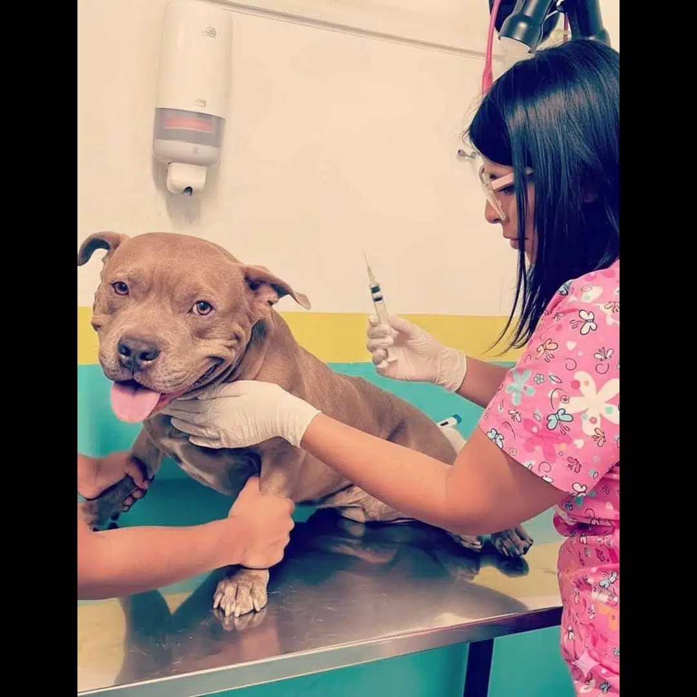
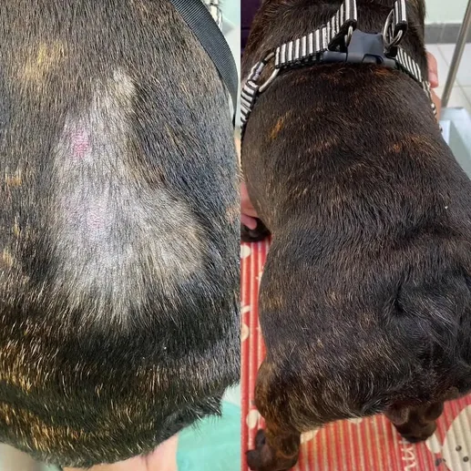
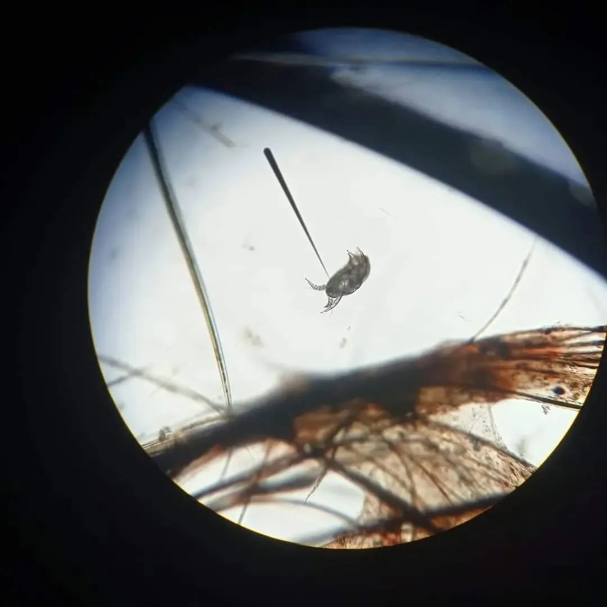
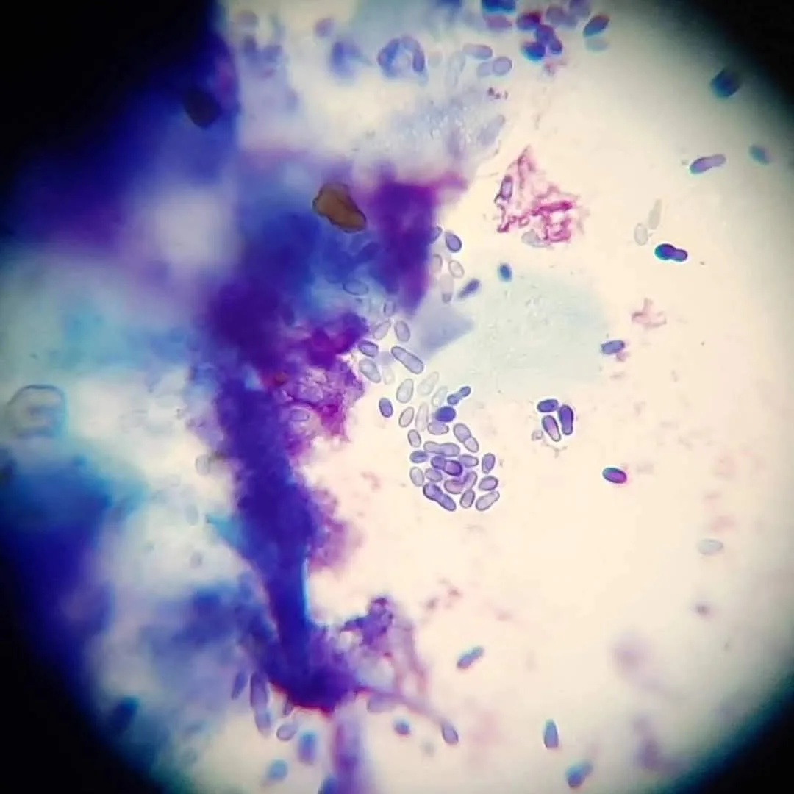
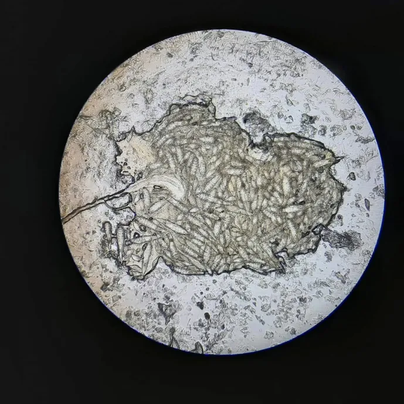
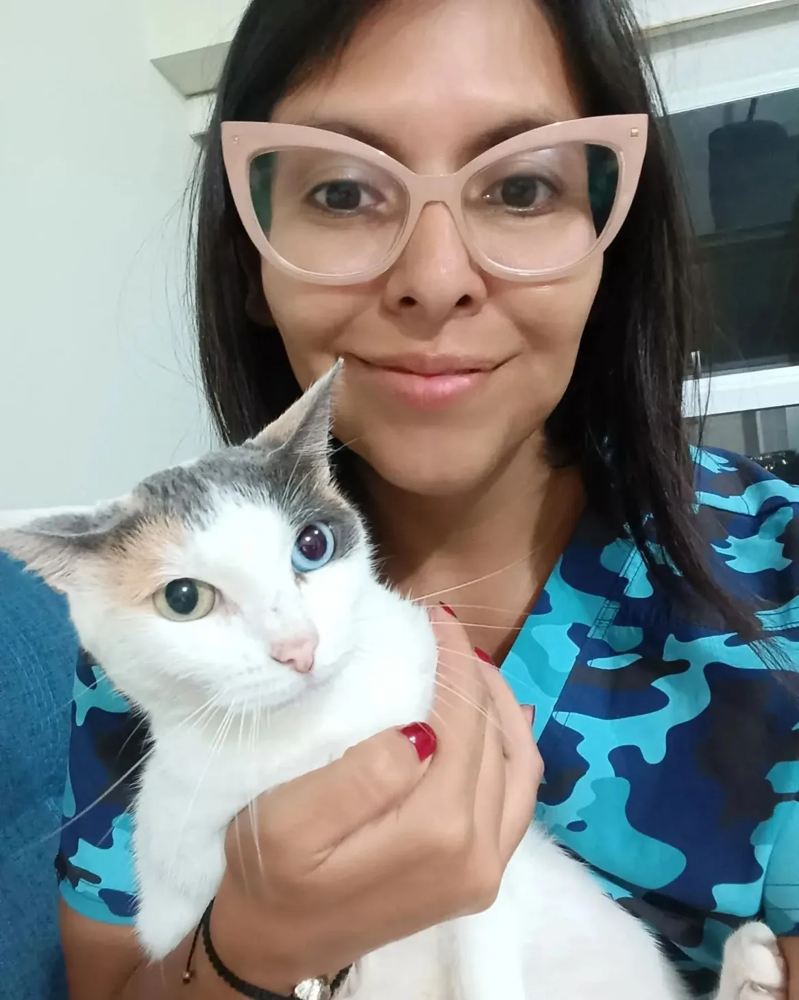

The skin doesn't generate disease. It announces it. In clinical practice, a dog that scratches, licks, or loses hair rarely has a problem that starts in the skin. The skin is where an internal process that's been running silently for months — sometimes years — finally becomes visible.
The clinical question, then, is never "what's wrong with the skin?" The question is: what has the skin been trying to say, and for how long?

Systemic Veterinary Diagnosis — The Skin as Interpreter of Subclinical Disease
The dermatological sign is the late visible evidence of a systemic process. Focal hyperpigmentation, alopecia without pruritus, recurrent pyoderma, intractable pruritus — none of these are diagnoses. They are signals. The diagnosis starts where the skin ends: in endocrinology, nutrition, immunology, and internal medicine.
A dog with undiagnosed Cushing's disease, concurrent hypothyroidism, and accumulated immunosuppression may present because it "scratches a lot." The opportunistic fungal contamination that takes hold on that basis — Malassezia yeasts, dermatophytes — isn't the problem. It's the last visible symptom of three systems collapsing in silence. Treating only the skin in that context is putting a mask on a disease that keeps advancing underneath.

Clinical articles and reviews
Signed analyses on systemic diagnosis, dermatology, and veterinary endocrinology, with peer-reviewed sources.
-
Dog licking and losing hair: the skin as a warning of a systemic process
Chronic licking and alopecia: sustained stress, cortisol, and immunosuppression. For owners and clinicians.
Read → -
Hyperadrenocorticism (Cushing's) and the skin — technical review
Cutaneous manifestations of HAC and the differential diagnosis: true Cushing's vs. pseudo-Cushing. For professionals.
Read review → -
Hypothyroidism, sick euthyroid syndrome (NTIS) and the skin — technical review
Hypothyroid dermatosis and NTIS as a confounder of low T4. Differential diagnosis. For professionals.
Read review →
The One-Hour Consultation — Vincular Diagnostic Methodology
The clinical consultation lasts one hour. Not because the physical exam demands it, but because accurate diagnosis requires context. The first part of the consultation doesn't involve the animal: it involves the owner.
When does it scratch? During the day or at night? When it's alone, or when someone's home? Does it go out for walks? How often? What does it eat — exactly? How does it sleep? Where does it lick itself, and what part of its body does it bite? Does it interact with other animals or children?
These aren't routine intake questions. They are the first diagnostic instrument. An animal's behavior in its daily environment reveals patterns that clinical examination alone cannot detect. Properly guided, the owner becomes an active witness to the diagnostic process — not a spectator of it.
After that comes intuition. Not as a replacement for method, but as its natural result: the distillate of 13 years of cases seen, questioned, and resolved.
Evidence-Based Veterinary Dermatology — Parasitological and Cytological Diagnosis
Evidence-based dermatological diagnosis integrates skin scraping, cytology, fungal culture, and histopathology when indicated. The microscopic finding — mite, yeast, bacillus, dermatophyte — is the data point that guides treatment. Prescribing without that data is a guess, not a clinical decision.



Veterinary Endocrinology and Subclinical Disease — Cushing's, Hypothyroidism, Immunosuppression
Endocrine diseases in dogs and cats share a characteristic that makes early diagnosis particularly difficult: their initial progression is silent. Hyperadrenocorticism (Cushing's), hypothyroidism, diabetes mellitus — all generate a gradual deterioration that the animal compensates for over months, until the system can no longer hold.
When that breakdown surfaces, it frequently does so through the skin: hyperpigmentation in areas that weren't pigmented before, hair loss without pruritus, slow wound healing, recurrent skin infections. The dark patch on the skin that "wasn't there before" is often the first visible signal of a disease that's been subclinical for months.
The endocrinological diagnostic protocol includes complete bloodwork — CBC, biochemistry, thyroid hormones T3/T4, baseline cortisol — and correlating those results with clinical history, animal behavior, and physical findings. The number alone isn't a diagnosis. The number in context is.
Clinical Veterinary Nutrition — Diet as a Diagnostic Variable
Nutrition isn't a supplement to clinical diagnosis. It's a variable within it. An animal with sustained protein deficiency, chronic inflammatory diet, or excess fermentable carbohydrates may present signs that in another context would point to primary pathology. Without evaluating the diet, the differential diagnosis is incomplete.
Nutritional assessment during consultation includes analysis of the current food — actual composition, not the marketing label — feeding frequency and quantity, treats and supplements, and the relationship between dietary changes and the onset or remission of symptoms. Many skin problems don't improve with dermatological treatment because the cause is in the bowl.
Feline Medicine — Clinical Diagnosis in Cats
A cat is not a small dog. Its physiological compensation mechanisms, its pain expression patterns, and its metabolic response to disease are sufficiently distinct to require a specific diagnostic approach. A cat that has stopped grooming, changed its litter box habits, or started sleeping in an unusual spot may be expressing chronic pain or systemic disease in ways that would be far more obvious in another species.
Feline medicine applies the same systemic methodology: skin, endocrinology, nutrition, and internal medicine as parts of the same system, interpreted within the specific behavioral and physiological context of the cat.

Open regulatory knowledge — why we published it and why it matters
International companion animal transport operates at the intersection of three systems that rarely communicate with each other: veterinary medicine, customs law, and ecosystem biosecurity. Each country has its own protocols. Each protocol varies. Sanitary authorities update their requirements without prior notice, clinical criteria don't always align with documentary requirements, and the animal pays for that gap.
When I began working systematically in international transport, the specific technical literature on the subject was, in practice, nonexistent. Not in the academic sense of "not enough papers." In the real sense that a veterinarian trying to correctly certify a trip between Peru and the European Union, or between Mexico and Australia, depended on informal criteria passed between colleagues, undocumented experience, and personal interpretation of government regulations written in bureaucratic language. That information had invisible owners. It wasn't written down. It wasn't verifiable. It couldn't be cited.
The introduction of pathogens through improperly certified animals is not a hypothetical scenario. It's a documented transmission mechanism that international animal health organizations — OIE, FAO — record with precision. An animal that travels without the correct protocol doesn't just put its own health at risk: it can become a vector for diseases that don't exist in the destination country. Island ecosystems are especially vulnerable. The sanitary barriers that protect them are exactly as solid as the information held by the veterinarian who signs the certificate.
I decided to document what I knew in a form that could be verified, cited, and corrected. Not as a gesture of generosity, but as the logical consequence of working rigorously in a field where rigor had no written support. Fourteen technical articles published on Zenodo CERN, gathered into a public community, and a project on OSF that integrates them as a corpus. CC BY 4.0 license. Any veterinarian, sanitary authority, or academic institution can read them, cite them, challenge them, and improve them.
That is how clinical knowledge with consequences for public health and biodiversity should work: accessible, attributable, auditable.
Virtual Veterinary Consultation — Clinical Guidance Without Geographic Restriction
The practice offers in-person consultation at the clinic for patients who can attend in person, and remote guidance and follow-up consultation for patients in other cities or countries.
Remote consultation doesn't replace direct physical evaluation in cases that require it. It does allow for resolution of pre-consultation diagnostic uncertainty, guidance on the relevance of additional studies, interpretation of results already obtained, and follow-up for ongoing cases.
For cases requiring physical examination, referral to a trusted colleague in the patient's city is part of the service. Correct diagnosis matters more than physical presence.
Contact: mv.jcamachog@zoovettravel.com